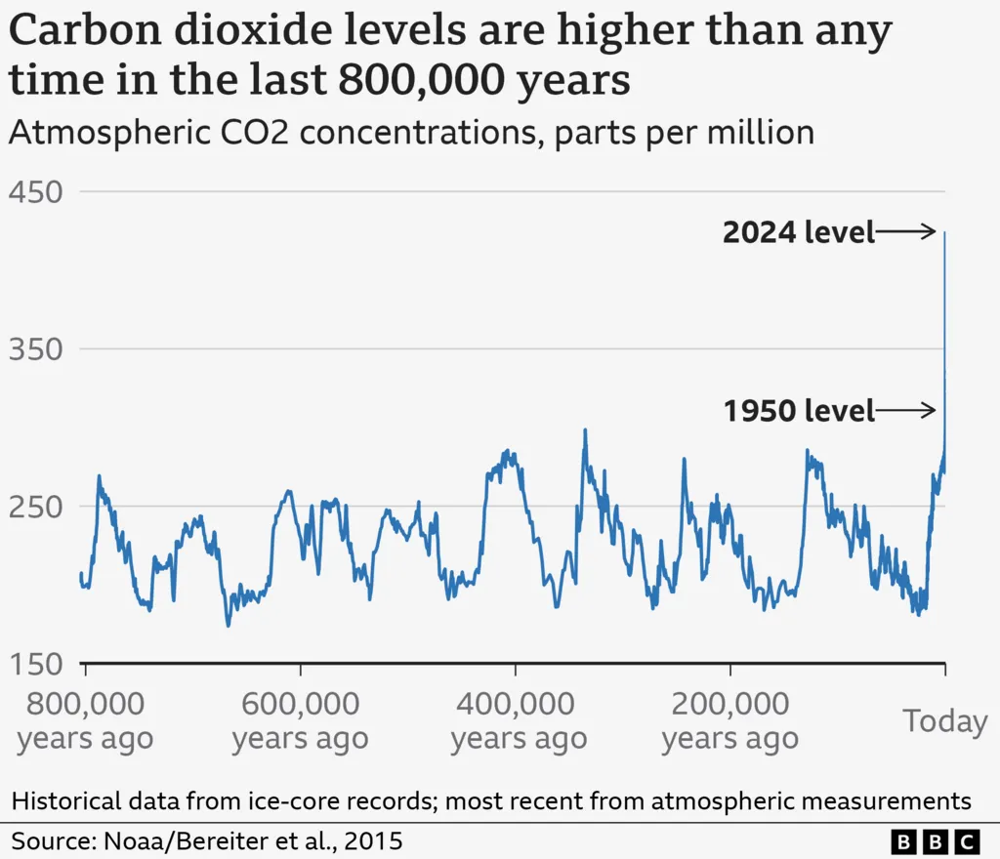
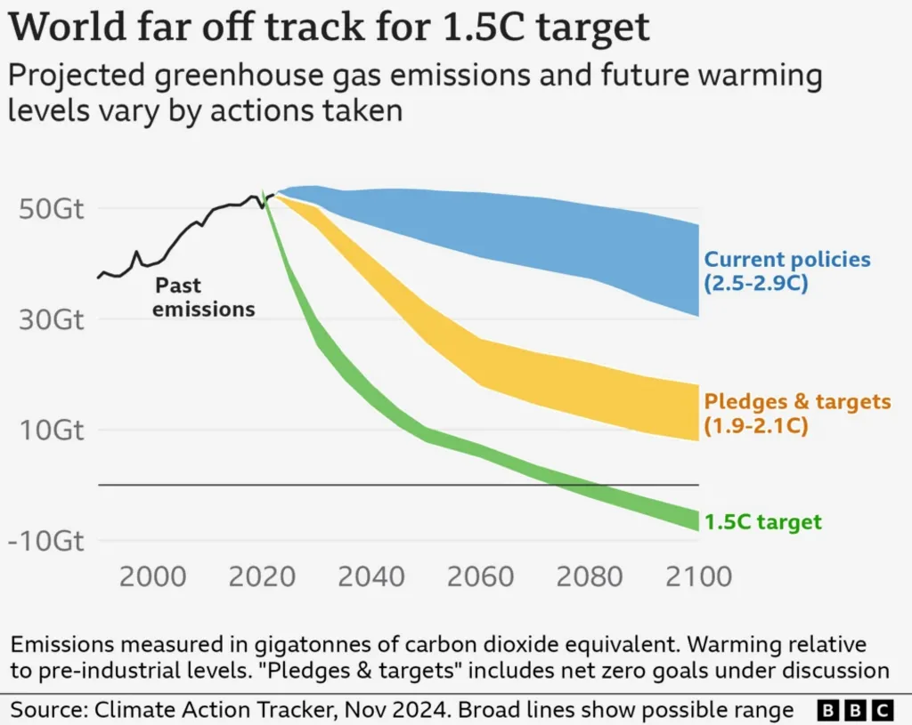

Publication date: 30 July 2025
Source: https://www.bbc.com/news/articles/c9w15nggj58o
A really simple guide to climate change

Human activities are causing world temperatures to rise, posing serious threats to people and nature.
Things are likely to worsen in the coming decades, but scientists argue urgent action can still limit the worst effects of climate change.
What is climate change?
Climate change is the long-term shift in the Earth's average temperatures and weather conditions.
The world has been warming up quickly over the past 100 years or so. As a result, weather patterns are changing.
Between 2015 and 2024, global temperatures were on average about 1.28C above those of the late 1800s, known as pre-industrial levels, according to the European Copernicus climate service.
Since the 1980s, each decade has been warmer than the previous one, the UK Met Office says.
The year 2024 was the world's hottest on record, with climate change mainly responsible for the high temperatures.
It was also the first calendar year to surpass 1.5C of warming compared to pre-industrial levels, according to Copernicus.
How are humans causing climate change?
The climate has changed naturally throughout the Earth's history.
But natural causes cannot explain the particularly rapid warming seen over the last century, according to the UN's climate body, the Intergovernmental Panel on Climate Change (IPCC).
This has been without doubt caused by human activities, in particular the widespread use of fossil fuels - coal, oil and gas - in homes, factories and transport systems.
When fossil fuels burn, they release greenhouse gases - mostly carbon dioxide (CO2). This CO2 acts like a blanket, trapping extra energy in the atmosphere near the Earth's surface. This causes the planet to heat up.
Since the start of the Industrial Revolution - when humans started burning large amounts of fossil fuels - the amount of CO2 in the atmosphere has risen by more than 50%, far above levels seen in the Earth's recent history.
The CO2 released from burning fossil fuels has a distinctive chemical fingerprint. This matches the type of CO2 increasingly found in the atmosphere.
What effects of climate change have already been seen?
Climate change has already had a huge effect, including:
- more frequent and intense extreme weather, such as heatwaves and heavy rainfall
- rapid melting of glaciers and ice sheets, contributing to sea-level rise
- the shrinking of Arctic sea-ice
- warmer oceans, which can fuel more intense storms and harm sea life
These changes are already having serious consequences for people and economies around the world.
For example, the Los Angeles fires of January 2025 could have a final cost of more than $100bn (£75bn) according to some estimates - one of the most expensive weather-related disasters in US history.
Many factors were at play, but climate change increased the chances of the hot, dry weather that gave rise to the fires, according to scientists at the World Weather Attribution (WWA) group.
Back in 2022, parts of East Africa suffered their worst drought for 40 years, putting more than 20 million people at risk of severe hunger.
Climate change has made droughts like this at least 100 times more likely, the WWA says.
The particular vulnerabilities of individual communities across the globe determine who is affected by these extreme events, and how badly.
Why does 1.5C matter and how will future climate change affect the world?
The more the world warms, the worse the impacts of climate change become.
Nearly 200 countries have pledged to try to limit global warming to 1.5C above pre-industrial levels, as part of the 2015 Paris climate agreement.
That target is generally understood to relate to an average annual increase of 1.5C recorded over 20 years, rather than a one-off rise captured in an individual 12-month period.
Long-term warming of 1.5C would still bring serious consequences for many populations.
But a very large body of scientific evidence shows that warming of 2C or more would bring far greater impacts, on top of those felt at 1.5C, the IPCC says.
These include:
- more people being exposed to extreme heat
- higher sea levels as glaciers and ice-sheets melt
- increased risks to food security in some regions due to more extreme weather
- greater chances of some climate-sensitive diseases spreading, such as dengue
- more species being threatened with extinction
- the loss of virtually all coral reefs
The call to restrict temperature rise to 1.5C was partly designed to avoid crossing so-called "tipping points".
It is not clear exactly where they sit, but once these thresholds are passed, changes could accelerate and become irreversible.
These could include the collapse of the Greenland Ice Sheet, warm Atlantic Ocean currents or further loss of the Amazon rainforest.
About 3.3 to 3.6 billion people are highly vulnerable to climate change, according to the IPCC.
People living in poorer countries are expected to suffer most as they have fewer resources to adapt.
This has led to questions about fairness, because these places have typically only been responsible for a small percentage of greenhouse gas emissions.
However, knock-on impacts could be felt over wide areas. For example, crop failures linked to extreme weather could raise food prices across the globe.
What are governments doing about climate change?
Reaching net zero CO2 emissions is essential to limit global warming, the IPCC says.
This means reducing emissions as much as possible, and actively removing any remaining emissions from the atmosphere.
Most countries have, or are considering, net zero targets.
There has been encouraging progress in some areas, such as the growth of renewable energy and electric vehicles.
But humanity's CO2 emissions are still at record highs.
That has left the target of limiting warming to 1.5C is hanging by a thread.
In fact, warming could reach close to 3C by the end of the century based on current policies.
World leaders meet every year to discuss their climate commitments.
At the most recent summit in November 2024, COP29, richer countries committed to giving developing nations at least $300bn (about £225bn) a year by 2035 to help them tackle climate change.
But this is far less than poorer countries say they need.
Many countries had also hoped that the deal struck in 2023 to "transition away from fossil fuels in energy systems" would be strengthened, but that did not happen.
Governments will gather again in Brazil in November 2025 for the next major climate conference, COP30.
What can individuals do about climate change?
Major changes need to come from governments and businesses, but individuals can also help through actions like:
- taking fewer flights
- using less energy
- improving their home's insulation and energy efficiency
- switching to electric vehicles or living car-free
- replacing gas central heating with electric systems like heat pumps
- eating less red meat